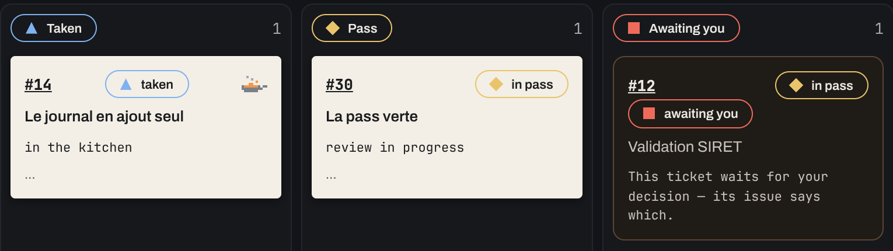
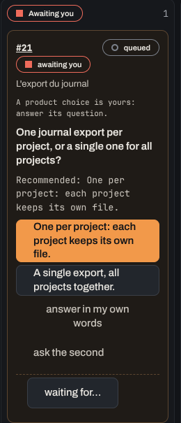
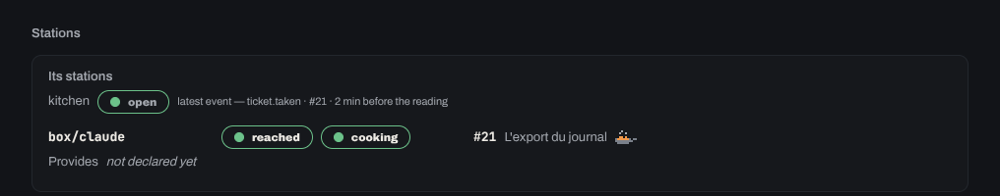
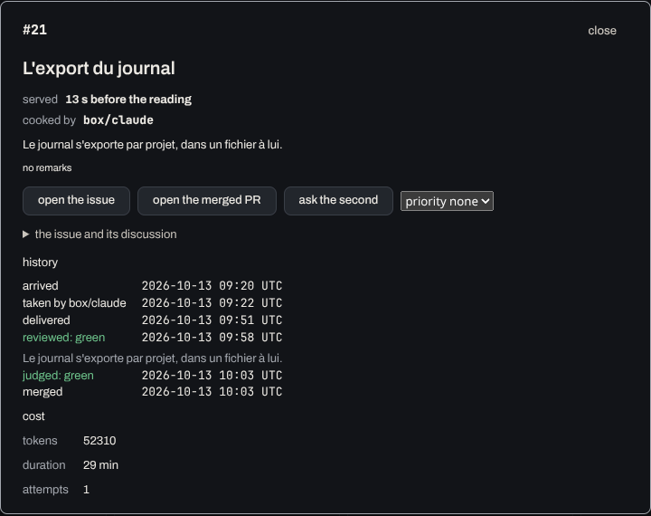

Three reasons you can leave
It ships, you don't babysit
An agent takes the issue in its own git worktree and opens the pull request. Nothing waits for you to steer it. Proof: 98 of Brigade's last 100 merged pull requests were written this way (see below).
It arrives already reviewed
Your gates, type check and CI run, then an independent review. Only green merges; a failed attempt goes back to an agent, not to you. Proof: every issue, pull request and review is public on GitHub.
You are called only when it matters
Only a product or design choice reaches you, as a card that mentions you on GitHub, so GitHub Mobile notifies you. Proof: the awaiting list holds nothing else.
Full auto, with brakes
Letting agents merge is the point, so they are built to be trusted with it.
- Caps on duration, tokens and simultaneous agents.
- One stop halts every agent at once.
- A breaker trips after repeated failures.
- Nothing lives in a session's memory. If an agent dies mid-ticket, its committed work survives and the next one resumes from it.
How it works: the chef, the second, the kitchen
Brigade borrows the words of a restaurant. Here is each one, in a line:
- chef
- you, the human who decides.
- second
- your product assistant, in the app's terminal: it helps you write and prioritise tickets.
- kitchen
- Brigade running on your project: the cooks and the pass.
- fire
- the label you put on an issue to send it to the kitchen.
- rail
- the queue of fired tickets, served in order.
- cook
- a Claude Code session that works on one ticket, in its own git worktree.
- pass
- the step where a ticket is judged: your gates, type check and CI, then an independent review.
The phone is where you answer: a question reaches you there, you reply, the kitchen carries on.
You fire a ticket
Write an issue with acceptance criteria anyone can check, and put
fireon it. It joins the rail. The second helps you write and prioritise tickets.A cook takes it
It implements the ticket and opens a pull request. Several cooks work in parallel.
The pass judges it
Your repository's gates, type check and CI, then an independent review. A failed delivery goes back to the kitchen, not to you.
It's served
Green means merged and the issue closed. Anything only you can decide lands under awaiting.

Built by its own agents
brigade · last 100 merged PRs
written by agents, merged automatically98
written by hand2
human reviews required0
Brigade is developed with Brigade, every day. The tickets, pull requests and reviews are public: read them on GitHub and judge the work yourself.
See it work



Install Brigade, ship your first ticket
You need a GitHub repository you can push to (a throwaway one is fine) and a Claude Max subscription: the agents run on your Max session, an API key does not fit.
- Download the app with the button at the top of this page and open it.
- Sign in with GitHub: the app shows a code to type on the page it opens.
- Sign in with Claude with your Max account, if the app asks.
- Open your repository: type it as
owner/repoand click open this project. - Send a ticket: open an issue and put on it the label from step 1 of How it works.
No command to type, no file to edit. Every screen, step by step.
What comes next, and where you come in
Brigade is young and moving fast. These are the next things to build, and they are open to contributors.
Shared setups for small teams
Today one person runs one setup. Next: several people sending tickets to the same agents, each with their own account.
More engines than Claude
Agents run on Claude Code today. Codex and other engines are the next step.
Your use case
Tried it on your repository and hit a wall? That's a ticket.